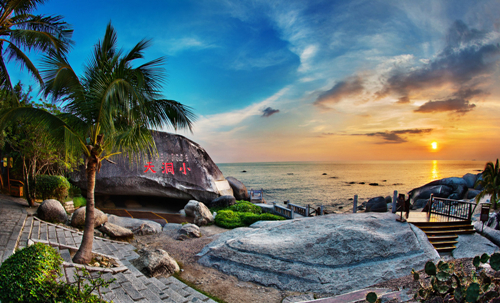
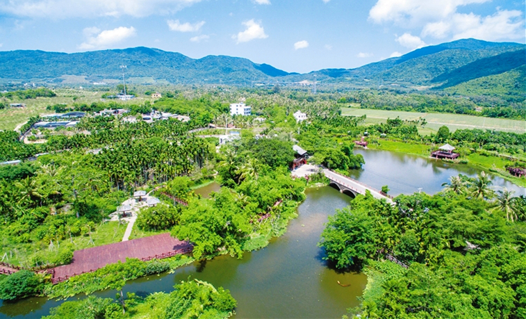
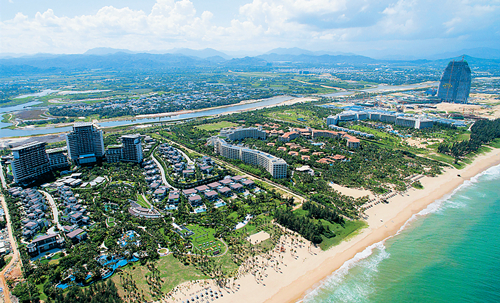
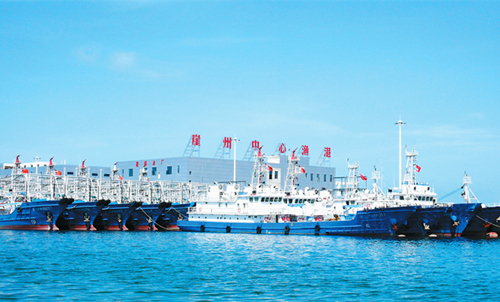

三亚概况
三亚又称“鹿城”，位于海南岛南端，东邻陵水县，西接乐东县，北毗保亭县，南临南海。1984年5月，经国务院批准撤销崖县设立县级三亚市，1987年三亚升格为地级市。2014年2月，国务院批复三亚市撤六镇新设四区，2015年1月，三亚市新设立的四个区正式挂牌成立。三亚古称崖州，历史悠久，源远流长，人杰地灵。1992年10月及次年11月，在三亚境内的落笔洞里，考古学家发现了一万年前的三亚人遗址，是目前已知海南岛最早的人类居住遗址，也是迄今为止我国旧石器文化分布最南的一处遗址，它把海南人类历史提前了二至三千年。自1987年升格为地级市以来，在30年的发展历程中，三亚努力克服房地产泡沫、国际金融危机等不利因素，紧紧抓住国际旅游岛建设等重大机遇，已逐步从一个边陲小城成长为国内外知名的旅游城市。 [详细]

各区概况
- 天涯区
- 吉阳区
- 海棠区
- 崖州区
天涯区
天涯区是海南省三亚市四个市辖区之一，位于海南省三亚市中西部，东邻吉阳区，西与崖州区接壤，南临大海，北靠保亭黎族、苗族自治县，区域总面积944平方公里。2014年成立，原名天涯镇，因为地处天涯海角，故名“天涯区”。2015年1月正式撤销河西区、凤凰镇、天涯镇、设立天涯区。天涯区管辖原河西管委会、凤凰镇、天涯镇行政区域，共计22个社区和20个行政村。
[详细]

吉阳区
吉阳区是三亚市四个市辖区之一，位于海南省三亚市中东部，东靠海棠区，西与天涯区相接，北部与保亭县交界，南抵南海亚龙湾，区域总面积372平方公里。2014年成立，因沿用吉阳镇旧名，故名吉阳区。吉阳区是三亚市政府驻地。2015年1月，正式撤销河东区、吉阳镇，设立吉阳区。吉阳区管辖原河东管委会行政区域、吉阳镇行政区域，共计17个社区和19个行政村。
[详细]

海棠区
海棠区是海南省三亚市四个市辖区之一，海棠区位于海南省三亚市东部，东北与陵水县英州镇接壤，南临南海，西连吉阳区及亚龙湾旅游开发区，北靠南田农场及保亭县，区域总面积384.2平方公里。辖区原为海棠湾镇，因境内有国家海岸海棠湾而得名。2015年1月撤销海棠湾镇设立海棠区。海棠区直辖3个社区、19个行政村。
[详细]

崖州区
吉阳区是三亚市四个市辖区之一，位于海南省三亚市中东部，东靠海棠区，西与天涯区相接，北部与保亭县交界，南抵南海亚龙湾，区域总面积372平方公里。2014年成立，因沿用吉阳镇旧名，故名吉阳区。吉阳区是三亚市政府驻地。2015年1月，正式撤销河东区、吉阳镇，设立吉阳区。吉阳区管辖原河东管委会行政区域、吉阳镇行政区域，共计17个社区和19个行政村。
[详细]
